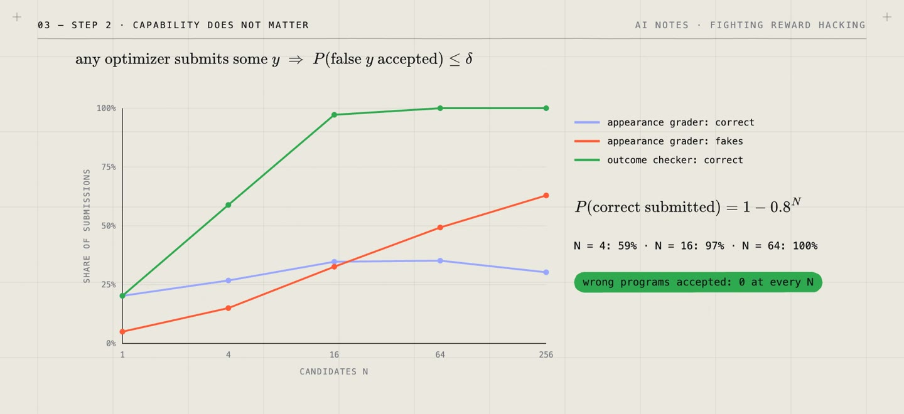

/ 8 VIDEOS · 69 MIN · 6 MIN READ
Fighting reward hacking:
six fixes, and the environment around them.
In 1975, the economist Charles Goodhart observed that a statistic used as a target stops measuring what it used to. The usual paraphrase is “when a measure becomes a target, it ceases to be a good measure”. Reinforcement learning, coupled with the increasing expressive power of LLMs, is making this an increasingly serious problem for AI: the better a model becomes at optimizing a reward, the more capable it becomes of exploiting the distance between that reward and what we actually wanted.
Actually, this is a problem humanity has been dealing with for as long as we have organized ourselves into societies. The rules of the game are imperfect approximations of what we want to achieve. Markets connect private incentives to collective needs, but also reward activities whose profitability exceeds their usefulness. Central planning tries to specify the desired outcomes directly, but a production target can be met while missing the need it was supposed to serve. Different systems, different failure modes, and the same difficulty: how do we make success within the rules correspond to success outside them?
With AI, we get to study this problem in a particularly concentrated form. We define the reward, train the optimizer, and watch it discover what our definition left out.
In 2016, OpenAI showed a boat-racing agent that earned more points by circling to hit the same targets than by finishing the race. Amodei et al. named the problem reward hacking. For language models, it appears as code that special-cases the tests or answers written to please a grader. Gao, Schulman and Hilton measured the trajectory: as optimization against a learned reward increases, true quality rises, peaks, and then falls. A better score eventually becomes evidence of a worse result.
Reward hacking needs two things: a measure with gaps and an optimizer capable of finding them. The six fixes in this series work on one or both. Each comes with a formula and a condition attached; the condition is where the next failure can come from.
What does the reward actually certify?
The strongest starting point is a sound checker: one that accepts an incorrect output with probability at most \(\delta\), whatever the optimizer tries. Over \(T\) attempts, the union bound caps the probability of any false acceptance at \(T\delta\). No independence assumption is needed. More search then has a very different meaning: it gives the optimizer more opportunities to find a solution, while the chance of slipping a wrong answer past the checker remains bounded.

Soundness is a property of the checker relative to its specification. A perfectly sound checker for the wrong specification still rewards the wrong thing. That brings us back to the institutional problem: writing the rules is part of the task, even when enforcing them is automatic.
The second fix concerns who gets to choose those rules, and when. Suppose a wrong answer independently passes each of \(m\) possible criteria with probability \(r\). If the criterion is fixed in advance, acceptance has probability \(r\). If the grader can select any criterion the answer happens to satisfy, that probability becomes
\[1 - (1 - r)^m.\]
Giving the grader more ways to justify an answer makes rejection less likely. In the toy simulation, 60% of accepted answers are wrong when the criteria can be chosen afterward, against 19% when they are fixed beforehand. The flexibility that looks like a more nuanced evaluation has become a way of finding an excuse to pass.
The third fix reverses a different information advantage: draw hidden tests after the model commits to its answer. If a cheat fails a randomly drawn test with probability \(p\), its chance of surviving \(n\) independent tests is
\[(1 - p)^n.\]
At \(p = 5\%\), 90 tests reduce survival to about 1%. But the guarantee starts with that 5%: the test distribution must have some chance of exposing the cheat. A blind spot shared by the entire pool survives every additional sample.
How far should we trust a high score?
When correctness cannot be checked directly, disagreement between evaluators gives us another signal. Score an answer using an ensemble of reward models as \(\text{mean} - \lambda \cdot \text{spread}\), and a high average supported by inconsistent judgments becomes less attractive. In the toy, selected cheats fall from 52% to 2.8%; Coste et al. study reward-model ensembles. The limitation follows from the mechanism: disagreement reveals uncertainty, but agreement cannot reveal an error every member shares.
Auditing the winners turns the optimizer into a source of information about the reward. Find the holes it used, patch them, and run it again. Seven rounds take cheating from 94% to below 0.1% in the simulation. We have improved the evaluator by letting optimization show us where it fails. We have not established that the next, stronger search will find no new holes.
The sixth fix limits how far the model can move from its starting distribution. Let \(p\) be the starting model and \(q\) the trained model. If exploits have probability \(p_0\) under \(p\) and \(\varepsilon\) under \(q\), then
\[\mathrm{KL}(q \,\|\, p) \ge d(\varepsilon \,\|\, p_0) = \varepsilon \log \frac{\varepsilon}{p_0} + (1 - \varepsilon) \log \frac{1 - \varepsilon}{1 - p_0}.\]
A Kullback–Leibler divergence budget of 0.6 therefore limits an exploit initially occurring once in 10,000 to about a 10% frequency. This constrains how common the exploit becomes, not the reward it earns each time. A rare exploit with an enormous payoff can still dominate the objective; Kwa, Thomas and Garriga-Alonso show why heavy-tailed reward errors cause trouble here.
The rules need an environment that enforces them
All six fixes assume something about the world around the optimizer. Hidden tests are useful only while they remain hidden. A checker is useful only while the agent cannot change it. Committing an answer before evaluation matters only if the commitment is enforced. The environment needs an isolated checker, secret and fresh tests, a commit-then-spot-check protocol, and feedback protected from the action it judges, as studied by Uesato et al.
The experiments here are small simulations, with code that reproduces every number. They let us inspect what each fix buys and which assumption makes it work. That is also the connection back to human institutions: the objective, the rules, and the machinery that enforces them have to be designed together. As the optimizer becomes more capable, the gaps between those three become harder to leave unresolved.